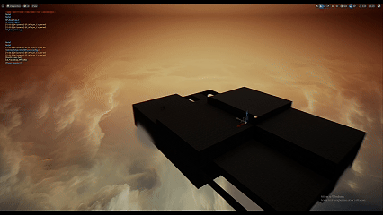

Gerador Procedural de Dungeons em Blueprint Procedural Dungeon Generator in Blueprint
Sistema de geração procedural determinística de níveis focado em jogos multiplayer, construindo dungeons complexas de forma modular, com alta rejogabilidade e performance em rede. Deterministic procedural dungeon generation system designed for multiplayer titles, assembling modular dungeons with high replayability and networked performance.

Fluxo de Funcionalidades & Lógica da Arquitetura Feature Pipeline & Architecture
1. Geração Determinística por Seed (DataAsset Driver) 1. Seed-Based Deterministic Generation (DataAsset Driven)
O layout é construído com base em um DataAsset que armazena a biblioteca de salas (tiles/sub-levels) e uma Seed numérica, permitindo bilhões de combinações de mapas totalmente reproduzíveis e previsíveis para matchmaking ou daily runs. Level layouts build from DataAssets containing room libraries (tiles/sub-levels) driven by numeric Seeds, yielding billions of reproducible map layouts.
2. Conexão Modular de Salas (Encaixe de Soquetes) 2. Modular Room Connections (Socket Matching)
As salas são carregadas e encaixadas como um quebra-cabeça 3D através de pontos de conexão (Sockets/Anchors), verificando a compatibilidade de aberturas e limites do grid para evitar sobreposição ou rotas sem saída. Rooms load and snap like 3D puzzle pieces using connection points (Sockets/Anchors), validating grid bounds and doorway compatibility to prevent overlaps or dead ends.
3. Injeção de Detalhes Locais (EnvironmentManager) 3. Local Detail Injection (EnvironmentManager)
Após estruturar o layout das salas, uma ferramenta dedicada (EnvironmentManager) lê a posição e quadrante de cada setor para spawnar módulos internos e adereços contextuais (props/decorations) que variam com a mesma Seed, garantindo variedade visual mesmo em salas com a mesma geometria base. Once structural room layouts assemble, the EnvironmentManager populates sub-quadrants with contextual props and decor driven by the same Seed.
4. População Dinâmica de Gameplay (Game Logic & Populator) 4. Dynamic Gameplay Population
Com o mapa e a estética definidos, o sistema executa uma varredura para resolver os componentes do jogo: spawna portas interativas nos pontos de conexão, posiciona pontos de surgimento de IAs, caixas de saque e gatilhos de eventos. After geometry and visuals lock in, population algorithms place interactive doors, AI spawners, loot containers, and gameplay triggers.
5. Otimização Multiplayer & Level Streaming (Server-Authoritative) 5. Multiplayer Optimization & Level Streaming
Toda a lógica de geração roda no Servidor (garantindo autoridade e prevenindo cheating). Uma vez definido o layout, os Clients carregam as salas via Level Streaming (assíncrono na memória), eliminando travamentos de carregamento (hitchs/stuttering) durante a partida e sincronizando perfeitamente o estado do nível para todos os jogadores. Generation runs Server-side to maintain authority. Once layout locks, clients load room sub-levels asynchronously via Level Streaming, eliminating hitching and keeping state synchronized.
Destaques de Produção & Boas Práticas Production Highlights & Best Practices
- Arquitetura Orientada a Dados (Data-Driven): Data-Driven Architecture: O uso de DataAssets permite que level designers criem novos conjuntos de salas ou biomas sem precisar alterar o código da Blueprint. DataAssets allow level designers to add new room sets or biomes without modifying core Blueprint logic.
- Network-Ready (Sincronização Eficiente): Network-Ready (Bandwidth Efficient): Em vez de replicar a posição de centenas de objetos pela rede, o servidor envia apenas a Seed e a estrutura de salas, deixando a montagem idêntica rodar localmente no cliente com consumo mínimo de banda (bandwidth). Instead of replicating hundreds of object transforms, the server sends only the Seed and room array, saving bandwidth.
- Escalabilidade e Desempenho: Scalability & Performance: Carregamento inteligente via streaming e descarte de processamento desnecessário na GPU/CPU durante a fase de montagem do nível. Smart streaming and cull passes keep CPU/GPU frame times optimal during room generation.